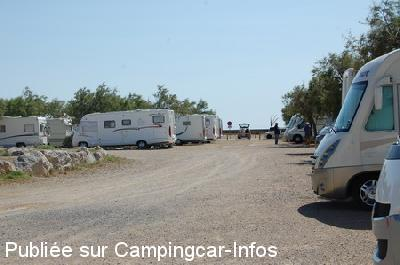
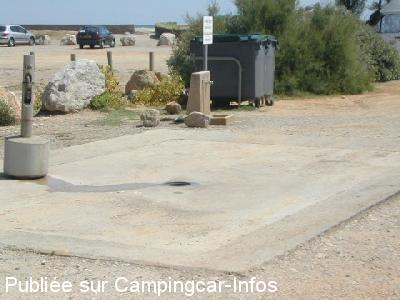
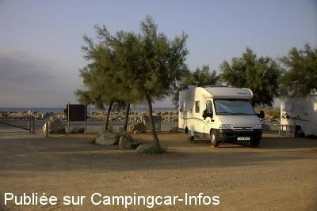

ASN = Aire de services avec stationnement nuit possible de :
GRUISSAN Plage
(N° 669)
Accès/adresse :
Avenue de la Jetée
Aire des Chalets
11430 GRUISSAN Plage
Aire des Chalets
11430 GRUISSAN Plage
Latitude : (Nord) 43.09578° Décimaux ou 43° 5′ 44′′
Longitude : (Est) 3.111223° Décimaux ou 3° 6′ 40′′
Tarif : 2015
Stationnement, services : 8,50 €
Type de borne : Autre
Services :


Commerces
Restauration
Autres informations :
Ouverte du 01/04 au 30/09
Surveillée 7 h à 22 h, hors saison 7 h à 20 h
80 emplacements face à la plage des Chalets
Il est spécifié de laisser un espace de 2,50 m entre chaque C-C
Tel Office du Tourisme : +33(0)468 752 121
contact@ville-gruissan.fr
http://www.ville-gruissan.fr

Le 21/07/2012 par LEVOYAGEUR68

Le 27/08/2007 par Dan 78

Le 09/10/2003 par Westie 62
de
vincent
le 13/09/2015 :
Malheureusement nous avons passés la nuit du 9 septembre 2015 .
Le restaurant ,proche de l'aire,organisait un karaoké .tTres bruyant ..
Bouchons d'oreille obligatoire.
Autrement cette aire se trouve proche de la plage, de la digue qui vous amène à un parc ostréicole ,à proximité des chalets !
Et si vous prenez le velo,la piste cyclable vous amène au port de Gruissan.
Il y a plus d'avantages que d'inconvénients.
Bon voyage
Malheureusement nous avons passés la nuit du 9 septembre 2015 .
Le restaurant ,proche de l'aire,organisait un karaoké .tTres bruyant ..
Bouchons d'oreille obligatoire.
Autrement cette aire se trouve proche de la plage, de la digue qui vous amène à un parc ostréicole ,à proximité des chalets !
Et si vous prenez le velo,la piste cyclable vous amène au port de Gruissan.
Il y a plus d'avantages que d'inconvénients.
Bon voyage
de
Alain lp
le 11/07/2015 :
Aire superbement placée pour ceux qui veulent profiter de la plage. Lors de mon passage fin juin de nombreuses places disponibles car de nombreux CC chassés par une sévère Tramontane.
Tous les commerces a 5 minutes a pied.
Aire superbement placée pour ceux qui veulent profiter de la plage. Lors de mon passage fin juin de nombreuses places disponibles car de nombreux CC chassés par une sévère Tramontane.
Tous les commerces a 5 minutes a pied.
de
les landais
le 02/05/2015 :
bjr aire a eviter depuis le debut du mois avril la commune a repris la moitie de l aire ainsi qu une vidange pour l amelioration du paparazzo pour les festiviter du mois de mai et de l ete.
bjr aire a eviter depuis le debut du mois avril la commune a repris la moitie de l aire ainsi qu une vidange pour l amelioration du paparazzo pour les festiviter du mois de mai et de l ete.
de
mam81
le 08/04/2015 :
A éviter !!! on paye de midi à midi, et après ou vous payez pour rester quelques heures de plus. hors saison (avril) nous pensions pouvoir rester quelques heures sur le parking attenant qui avait la barrière ouverte. mais la dame de l'aire est venue déloger tous les campings cars et a prévenue la police. ou tu payes une nuit pour rien ou tu parts. on n'y reviendra pas !!!!!
A éviter !!! on paye de midi à midi, et après ou vous payez pour rester quelques heures de plus. hors saison (avril) nous pensions pouvoir rester quelques heures sur le parking attenant qui avait la barrière ouverte. mais la dame de l'aire est venue déloger tous les campings cars et a prévenue la police. ou tu payes une nuit pour rien ou tu parts. on n'y reviendra pas !!!!!
de
dada et yaya
le 17/08/2014 :
Dormi 1 nuit le 14/08/14: aire bondée et par endroit un vrai lac suite a de fortes pluies. Camping car entassés pas de respect des 2m50 entre chacun. La marie devrait délimiter les emplacements.8.5€ pour services minimum c'est un peu cher. Sinon bien située a cote de la plage mais aussi fête foraine et resto c'est sur c'est bruyant.
Mais Gruissan et alentours très sympa et pour ceux qui aiment la glisse c'est un super spot de Kite et de planche.
Dormi 1 nuit le 14/08/14: aire bondée et par endroit un vrai lac suite a de fortes pluies. Camping car entassés pas de respect des 2m50 entre chacun. La marie devrait délimiter les emplacements.8.5€ pour services minimum c'est un peu cher. Sinon bien située a cote de la plage mais aussi fête foraine et resto c'est sur c'est bruyant.
Mais Gruissan et alentours très sympa et pour ceux qui aiment la glisse c'est un super spot de Kite et de planche.
de
André
le 16/08/2014 :
C'est vrai que nous sommes en août mais toutes les aires de Gruissan sont complètes mais pour seulement les services il est demandé 8,50€ c'est du racket
C'est vrai que nous sommes en août mais toutes les aires de Gruissan sont complètes mais pour seulement les services il est demandé 8,50€ c'est du racket
de
babette et daniel
le 06/10/2013 :
dernière nuit avant fermeture hivernale un peu cher
8.50 E, agréable malgré tout moins de monde, la plage à coté a recommander hors saison.
dernière nuit avant fermeture hivernale un peu cher
8.50 E, agréable malgré tout moins de monde, la plage à coté a recommander hors saison.
de
Alamano
le 05/10/2013 :
Ben... J'ai fuit cette aire, plus parking qu'aire, boite à sardines et sale en plus...Bondée en septembre, alors en pleine saison, je ne dis pas...
Ben... J'ai fuit cette aire, plus parking qu'aire, boite à sardines et sale en plus...Bondée en septembre, alors en pleine saison, je ne dis pas...
de
Bosc
le 03/10/2013 :
Je confirme que le restaurant à coté de l'aire ne respecte rien : musique à fond ,cris ....etc
Sinon l'aire serait très agréable .
Je confirme que le restaurant à coté de l'aire ne respecte rien : musique à fond ,cris ....etc
Sinon l'aire serait très agréable .
de
niceday
le 17/06/2012 :
bonjour a part augmenter les tarifs la commune n'entretient pas du tout cette aire, le terrain est plein de trous quand il pleut c'est un vrai lac, tres sales (certains ccistes en sont responsables), avec la reconstruction du club de voile, du bar et la construction de deux restos presque plus de vue sur la mer, dommage
bonjour a part augmenter les tarifs la commune n'entretient pas du tout cette aire, le terrain est plein de trous quand il pleut c'est un vrai lac, tres sales (certains ccistes en sont responsables), avec la reconstruction du club de voile, du bar et la construction de deux restos presque plus de vue sur la mer, dommage
de
Daniel
le 12/06/2012 :
JE CONFIRME! De passage le samedi 2 juin sur cette aire qui était vraiment formidable avant qu'un bar à tapas ne se monte sur la plage. Musique à fond jusqu'à 4 heures du matin. En plus nous avons eu droit au verre cassé, mégots, capotes et autres sur la plage le lendemain matin, une honte!!!!
Il parrait que plusieurs plaintes sont déposées contre ce bar à tapas mais d'aprés les dires le patrons serait le fils d'un acteurs de cinéma bien connu, alors vous avez compris, cette aire est foutue !
JE CONFIRME! De passage le samedi 2 juin sur cette aire qui était vraiment formidable avant qu'un bar à tapas ne se monte sur la plage. Musique à fond jusqu'à 4 heures du matin. En plus nous avons eu droit au verre cassé, mégots, capotes et autres sur la plage le lendemain matin, une honte!!!!
Il parrait que plusieurs plaintes sont déposées contre ce bar à tapas mais d'aprés les dires le patrons serait le fils d'un acteurs de cinéma bien connu, alors vous avez compris, cette aire est foutue !
de
cachou
le 24/05/2012 :
passé le 7 mai. aire très bruyante le soir restaurant à côté musique à fond jusqu'à 1h30 du matin, même si il n'y a personne. plainte au responsable de l'aire, gros problème signalé à la police minicipale, aucun résultat. privilégiez l'autre aire sûrementplus calme côté musique.
passé le 7 mai. aire très bruyante le soir restaurant à côté musique à fond jusqu'à 1h30 du matin, même si il n'y a personne. plainte au responsable de l'aire, gros problème signalé à la police minicipale, aucun résultat. privilégiez l'autre aire sûrementplus calme côté musique.
de
blot-61-
le 10/08/2011 :
avons séjourné 2 jours en juillet 2011. Belle plage à proximité. Beaucoup de vent. Commerces de proximité à 200 mètres. Manque les bornes électriques. Malgré des instructions concernant l'espacement de 2,50 m entre chaque camping-car, celui-ci n'est pas respecté surtout en été. Présence de manèges forains juste à côté occasionnant du bruit le soir
avons séjourné 2 jours en juillet 2011. Belle plage à proximité. Beaucoup de vent. Commerces de proximité à 200 mètres. Manque les bornes électriques. Malgré des instructions concernant l'espacement de 2,50 m entre chaque camping-car, celui-ci n'est pas respecté surtout en été. Présence de manèges forains juste à côté occasionnant du bruit le soir
de
bengold
le 27/11/2010 :
Nous avons passé une nuit en novembre sur cette aire très agréable, au bord de la mer et du port de plaisance. Borne très fonctionnelle.
Nous avons passé une nuit en novembre sur cette aire très agréable, au bord de la mer et du port de plaisance. Borne très fonctionnelle.